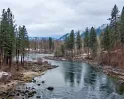
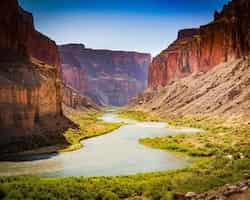
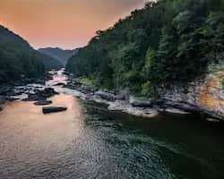

Wenatchee River
Located near Leavenworth, Washington. This is Washington's most popular rafting destination, offering Class III rapids suitable for families, first-timers, and thrill-seekers. Trips typically last 3-4 hours and include scenic canyon views, wave trains like Snowblind, Rock and Roll, and Granny's, and calm stretches for relaxation. The season runs from mid-April through early August, with peak conditions in May and June.

Colorado River
Located along Colorado and Utah. The Colorado River provides a unique combination of adrenaline, scenic beauty, and outdoor adventure. Trips can be tailored to all skill levels, from first-time rafters to experienced paddlers chasing large rapids. Multi-day expeditions offer immersion in natural landscapes, wildlife observation, and the chance to camp along riverside beaches, making a rafting adventure on the Colorado River an unforgettable experience.

Gauley River
Located in West Virginia. The Gauley River is one of the world's premier whitewater destinations, especially during its annual Gauley Season in fall. Each year, the U.S. Army Corps of Engineers releases water from Summersville Dam, creating a massive, reliable flow of about 2,800 cubic feet per second over roughly 22 release days across seven weekends. This produces over 100 rapids in a 25-mile stretch that drops more than 668 feet through a rugged canyon

Category
Wenatchee River
Colorado River
Gauley River
location
Washington
Arizona
West Virginia
Typical Trip Length
Half-day to full day
1-18 days
Full day or weekend
Best Season
May-July
April-October
September-October
River Difficulty
Class III-IV
Class III-IV
Class III-V
Experience Level
Beginner to intermediate
Beginner to advanced
Intermediate to advanced
Signature Rapids
Boulder Bend, Drunkard's Drop
Lava Falls, Crystal, Hermit, Hance
Pillow Rock, Lost Paddle, Iron Ring
Scenery
Alpine forests, Cascade Mountains, orchards
Massive canyon walls, desert landscapes, waterfalls, side canyons
Appalachian gorge, dense forests, steep canyon walls
Camping Component
Usually none
Often included on multi-day trips
Available on some overnight trips
Adventure Level
Moderate
High
Very high
Family Friendliness
High
Moderate to high depending on trip type
Lower Gauley suitable for experienced families; Upper Gauley is generally for thrill-seekers
Typical Cost Range
$80-$150 per person
$450-$6,500+
$120-$250 per person